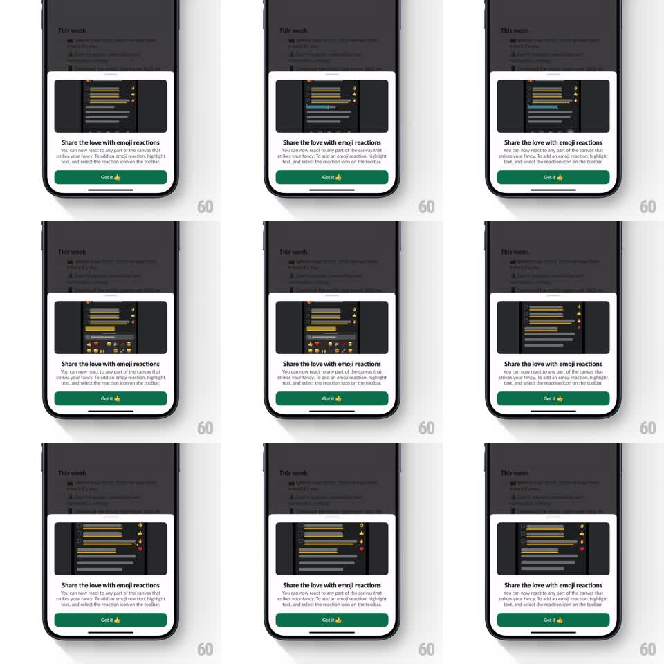

Media
Frame-by-frame

Rebuild this animation 1:1: Slack's emoji-reaction intro sheet - a bottom sheet rises over a dimmed canvas while a looping demo inside it shows a highlight picking a reaction from a pop-up toolbar and the emoji floating onto the text.

Rebuild this animation 1:1: Slack's emoji-reaction intro sheet - a bottom sheet rises over a dimmed canvas while a looping demo inside it shows a highlight picking a reaction from a pop-up toolbar and the emoji floating onto the text. ## Integration Integration: stack-agnostic spec - springs given as stiffness/damping, timed motions as duration + curve; map every value to your framework and animation library of choice. ## Scene A dark canvas thread view, dimmed, with a white bottom sheet. In the sheet: a rounded demo video area playing the loop, the headline "Share the love with emoji reactions", explainer text about reacting to any part of the canvas, and a green "Got it" button with a thumbs-up emoji. ## Motion spec Pattern: sheet entrance with looping in-sheet demo, ~1s entrance, 4s demo loop. - The canvas dims to 50% (250ms) as the sheet rises from the bottom (spring stiffness 280 damping 26), settling with its top rounded corners. - Inside the demo area, the loop plays: a text line highlights (200ms), an emoji toolbar pops up from the demo's bottom edge (spring stiffness 420 damping 18), one emoji is tapped and scales with a press (scale 0.9, 100ms). - The chosen reaction flies from the toolbar to the highlighted line (300ms, ease-out arc), lands as a small reaction pill, and tiny hearts/sparkles float upward off the line (600ms, fading). - The loop resets: toolbar slides away, highlight clears, brief pause (400ms), then repeats. - On Got it tap: button presses (scale 0.96, 100ms), the sheet slides back down (300ms, ease-in) and the canvas undims. ## Calibration - The demo loop is self-contained inside the sheet's video area - nothing in the dimmed canvas behind moves. - The sheet's rise is one calm spring, no overshoot past its final position. ## Reduced motion Sheet fades in; demo shows its final frame statically. ## Don't miss - The reaction pill that lands on the line is the payoff of each loop - it must visibly stick before the reset. - The thumbs-up emoji sits inside the Got it button label, not beside it.